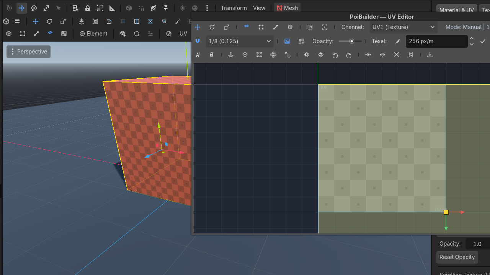

UV editor
A dedicated 2D canvas. Click a face in 3D, the island lights up. Drag in 2D, the 3D face updates.
Toolbar  UV
UV


 Row 2 · Docks
Row 2 · Docks UVOpens the dedicated 2D UV editor panel in the bottom dock.Needs: A PBMesh opens the bottom panel. Pop-out detaches it to a floating window.
UVOpens the dedicated 2D UV editor panel in the bottom dock.Needs: A PBMesh opens the bottom panel. Pop-out detaches it to a floating window.
Opens the dedicated 2D UV canvas panel in the bottom dock or a floating window.

Canvas
- Pan, zoom, a unit quad, optional texture underlay and tiling.
- Wireframe of the islands.
- Element modes on the UV toolbar: Vertex / Edge / Face / Island.
- Channels UV1 / UV2 / Splat masks.
- Snap toggle + step.
- Frame Selection / Frame Unit Quad.
Transforms
Move / Rotate / Scale tools on the 2D toolbar. Flip U, Flip V, rotate 90° CW/CCW. Sew, split, collapse, stitch.
Projections
| Button | What it does |
|---|---|
| Planar | Project along a chosen axis onto the selection |
| Box | Six-axis box map |
| Fit | Pack the island into 0–1 |
| Unwrap | Angle-based unwrap |
Texel density: read with Get, apply with Set, spinner in texels/metre.
Selection sync
Both directions:
- Click a wall in the 3D view — its island highlights on the canvas.
- Drag that island — the 3D face's texture moves.
Texture mode (6) is the 3D-side equivalent for quick rotates without opening the panel.
Splat masks — the paint debug view
The third channel is not a UV channel at all. Splat masks are authored in face-planar coordinates, normalized so each face fills the whole 0–1 square, and they travel in their own vertex channel (CUSTOM0) — never in UV2. The mask view draws that square for the selected face's material: the base texture with every painted layer and decal composited on top.
That explains the odd look on elongated faces: a splat in the middle of a long wall shows as a centered blot in a square, because the square is the face's paint area. The status line shows its real-world size (e.g. Splat area 4.00 × 0.50 m) so you can read the true proportions.
The mask view is read-only, by design. Selection works so you can inspect paint; the transform, projection, seam and texel tools go inert here. Splat paint and decals are edited by painting in the viewport — see Painting — never by dragging UVs.
UV2 and lightmaps
UV2 belongs to you: the splat system never writes it, whatever is painted on the mesh.
- Unwrap it with the toolbar's Lightmap button (it also flips the mesh to GI Mode: Static, which is what the LightmapGI baker looks for), or set it up in a DCC, and rebuilds leave it untouched.
- Paint, decals and geometry edits do not disturb it — you can keep painting on a mesh whose lightmap is already baked.
- Paint can also be flattened to plain tile textures outside an export (useful when a consumer cannot run the splat shader): the repository's
bake_splat.shscript does it in place, clears only the splat data and keeps UV2 — reference it or roll your own equivalent.
Use case — a stretched ramp
- Select the ramp face. UV panel → Planar (or Box if it wraps).
- Scale the island until the brick is square. Underlay on, so you can see the texture.
- If two ramps should match, Get texel on the good one, Set on the other.
Export PNG dumps the current island layout for an external painter.
Auto-UV already handles axis-aligned walls. Open this editor for ramps, cylinders, and anything you merged across a crease.